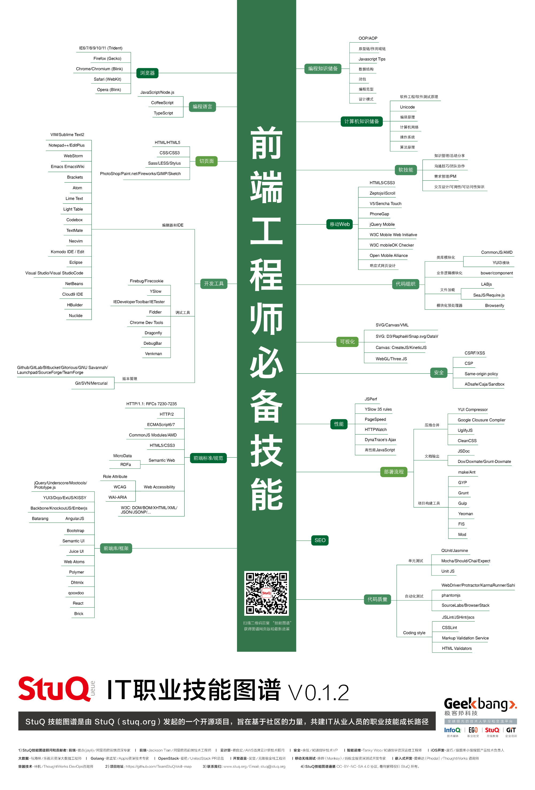
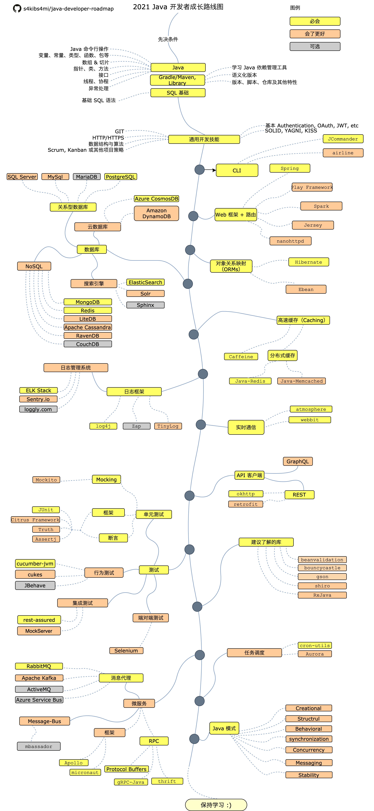
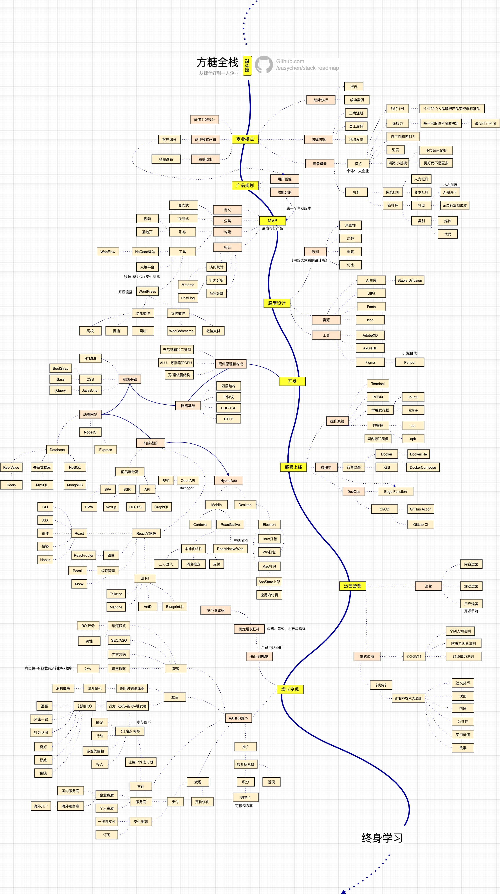
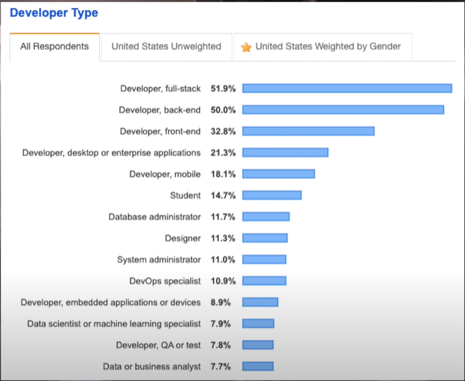
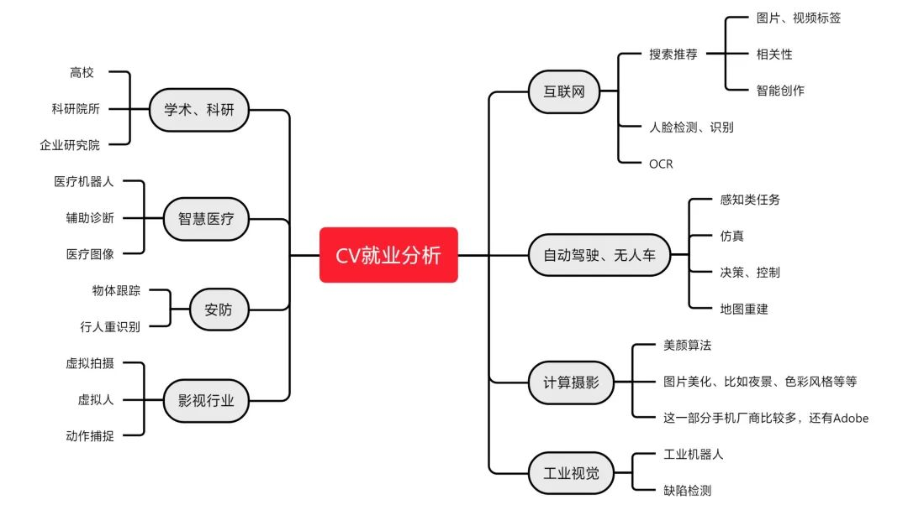
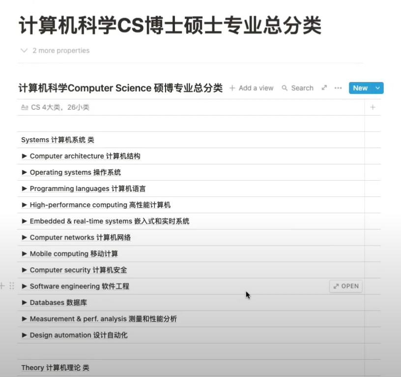
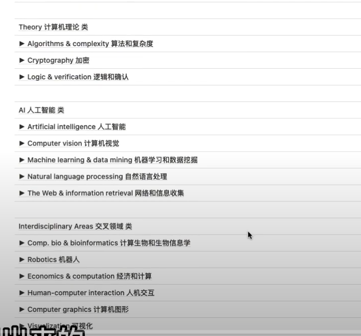
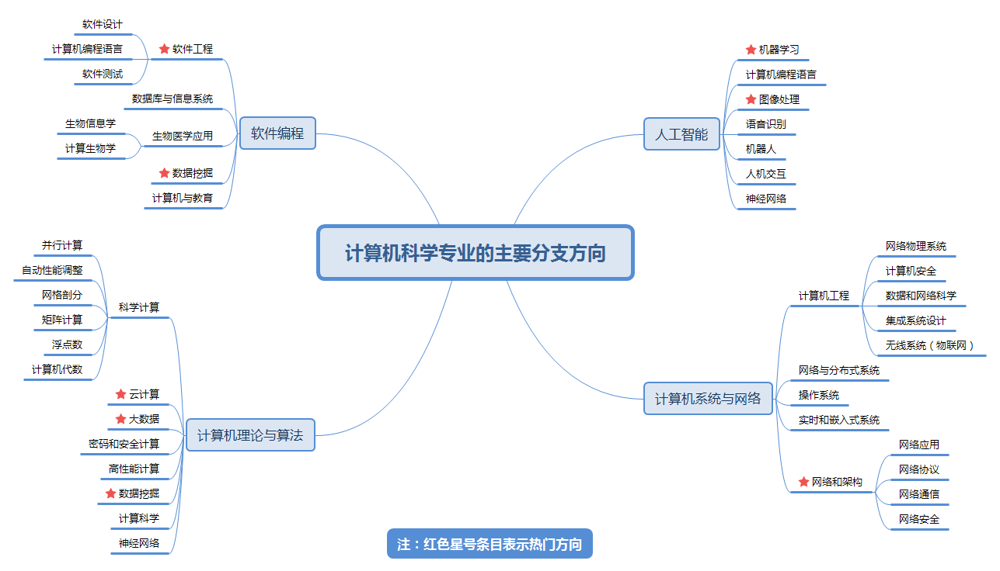

摘要
本文调研了目前软件行业的就业方向。用于个人选择合适的就业岗位使用。主要调研了软件行业有哪些就业方向，针对这些方向又调研了
- 职位岗位
- 目前需求：多还是少，为什么
- 前景如何：好还是坏，还是不明；从国内和国外两个角度；未来发展评估
- 企业：有哪些企业在做，龙头企业有哪些，从国内外两方面
- 细分领域：比如自然语言处理有对话领域blabla
- 特点：难度，特点
- 技术路线：整理该方向的技术路线图，对该方向的技术栈进行简单介绍
- 职业规划：方向职业的前进路线，初级-中级，blabla
- 是否利于出国：国外的需求是否更旺盛，是否更容易出国
调研方式
本文汇总的软件行业就业方向的调研方式是，通过知乎、bilibili、谷歌、YouTube、微信公众号、GitHub等平台，使用以下几组关键词：【就业、职业】【程序员、码农、软件行业】【方向、前景、规划、赛道】，时间选取近两年，进行搜索，总结相关视频、文章、评论等内容。
先搜集整理可能的软件行业方向，再根据将这些软件行业方向作为关键词，二次搜索。
PS由于国内广告太多，很多话都不太可信。。
开发方向-前端
职位岗位
无
需求
和后端差不多。
前景
Web这种还是挺有生命力的，但是，一切都是在变化，有可能若干年后一个技术变革，Web就丧失优势变得门可罗雀了，所以呢，各位同仁，要有心理准备。
同质化
企业
不局限于互联网，但是互联网的技术更新，更有竞争力。
应用领域
主要是移动端、PC端的前端开发，还有游戏，后端（NodeJS）以及其他（桌面端）
特点
- 越来越工具化、工程化
- 知识琐碎，门槛低
- 出效果快、激励周期短
技术路线

前端发展经历了三个阶段:
- 原生html、js、css
- 封装库、jquery
- 组件化开发：node
职业规划
| 职称 | 职责 | 年限(仅供参考) |
|---|---|---|
| 初级工程师 | 能在导师的帮助(详细设计, 关键点实现)下完成简单任务 | 0 |
| 中级工程师(开发) | 能在导师的协助(概要设计, 关键点说明)下独立完成复杂任务 | 1+ |
| 高级工程师(研发) | 能高质量高效率地独立完成任务 | 5+ |
| 资深/首席/专家/架构 | 全局观, 既有广度又有深度, 在某个专业领域有一席之地 | 8+ |
出国
无
开发方向-后端
职位岗位
根据语言不同分为很多，例如，Java、Go等。
去某公司做后端开发，不一定对他们用到的语言和框架很熟练，会其中一部分就够了，很多都是在工作中学的。
需求
前后端差不多。
前景
随时间变化很大。目前不明。
企业
不局限于互联网，但是互联网的技术更新，更有竞争力。
应用领域
领域广泛。
特点
- 注重功能性和稳定性
- 门类分支多：业务、算法、架构。。。
- 难以学深，容易瓶颈。这主要是小公司业务量不够&大公司构建技术壁垒，小公司的后端开发容易和大公司拉开差距
- 后端的工作范畴很广：设计api、架构、数据库、业务逻辑、高可用等
- 非常考验《系统设计》的能力
RoadMap
以Java为例
图片来源：https://github.com/s4kibs4mi/java-developer-roadmap/blob/master/i18n/zh-CN/ReadMe-zh-CN.md

出国
无
小结：前端后端对比
相同点
需求、工资、前景都差不多
职业发展规划差不多
| 职称 | 职责 | 年限(仅供参考) |
|---|---|---|
| 初级工程师 | 能在导师的帮助(详细设计, 关键点实现)下完成简单任务 | 0 |
| 中级工程师(开发) | 能在导师的协助(概要设计, 关键点说明)下独立完成复杂任务 | 1+ |
| 高级工程师(研发) | 能高质量高效率地独立完成任务 | 5+ |
| 资深/首席/专家/架构 | 全局观, 既有广度又有深度, 在某个专业领域有一席之地 | 8+ |
不同点
后端要学的技术太多了，而前端相对来说就少多了，压力自然少很多，而且后端也需要学一些前端技术，有的公司就有这样的需求，考虑到地中海干涸问题，肯定选前端，而且对于后面的发展，比如转型走管理架构什么的，前端基本没有优势。但是由于前端技术难度和学习成本不是太大，而且随着经验积累，即便到了四十多岁也可以继续开发，而后端再继续撸代码就难多了，因为本来前端逻辑代码不是太多，即便是使用node做前后端分离，前端复杂逻辑也不是太多，而且前端现在有很多脚手架和插件，都可以直接拿来用。而后端就不一样了，性能，并发，算法，各种优化，服务器问题等等，都是后端考虑的，虽然随着各种技术的出现，现在后端也开发没有以前费劲了，但是要知道底层原理和源码你还是要去翻，各种问题还是主要在后端这解决的。
评论：
前端四十多岁也可以继续开发，存疑。随着前端技术的发展，也可能技术难度up，四十多岁不能继续开发。
怎么选
- 兴趣、现状：你了解哪个多一点就选哪个
- 职业背景
- 年龄
开发方向-全栈
RoadMap
来源：https://github.com/easychen/stack-roadmap

特点
最大特点就是，难度高
特点之二是，美国全栈岗位多，后面再根据个人细分领域。可能利于出国。
不适合应届生
依据是2019年stack-overflow的调查问卷，程序员岗位分布：

QA
翻译过来叫质量保证，在国外主要指的是测试，tester。在国内还有另一种不同于测试的质量保证。这点需要注意，招聘时的QA究竟指的是质量保证还是测试工程师。
特点
- 分成两种，手工测试和自动化测试。
- 自动化测试需要写代码，需要懂一两门自动化测试语言和框架。
- 手工测试，对开发能力和写代码能力没有要求，但是需要有开发的经验。这类岗位基本被淘汰掉了。
RoadMap
人工智能-CV方向
2015-2020是黄金期，找工作比较容易。2020以后赚钱的业务挖掘的差不多了，对学历和论文的要求高。
CV岗位比开发岗少很多。
前景
今后会走向“平衡”。人话就是不温不火
应用领域

- 自动驾驶领域：比较火
- 工业视觉领域：应用潜力大
- 智慧医疗：有前景但比较困难
RoadMap
没找到比较好的。基本就是Python、PyTorch、数字图象处理，深度学习那一套。。
人工智能-NLP方向
自然语言处理(NLP)是人工智能技术的王冠，它推动着当代科技的持续发展和重大突破，并越来越多地应用于各行各业；它有着十分重要的实用价值，也有着革命性的理论
前景
前景广阔。之前比较卷，现在因为ChatGPT的出现，续了一口气
应用领域
对话、问答。
RoadMap
https://github.com/graykode/nlp-roadmap
人工智能-其他
人工智能还包括其他方向，例如推荐算法。
大数据
职位岗位
大数据是一个比较笼统的方向，既可以做大数据开发方向，也可以做数据挖掘等算法方向，也有商业智能BI。。。
具体方向有以下：
- ETL/数仓工程师：负责数仓建设，偏脚本开发以及SQL开发。
- 大数据开发工程师：负责数据计算，偏离线。实时代码开发。
- 大数据分析师：负责数据挖掘分析、偏业务分析/SQL
- 大数据算法工程师：算法建模、基于人工智能建模。往往是和推荐算法相关。
- 大数据BI工程师：偏报表和SQL开发。
不同方向的学习路线和技能都有所不同。
需求
没有Java那么卷，但是岗位也没有那么多。
前景
特点
- 大数据开发需要学习的组件非常多。也比较难。
- ETL/数仓的工作比较基础。
- 大数据分析和算法主要偏算法相关。
RoadMap.
学习可以从SQL入手。
https://github.com/TeamStuQ/skill-map/blob/master/data/map-BigDataEngineer.md
一篇有用的文章
想学大数据，大数据开发以后的前景怎么样，家里人对这方面了解不深，不太同意转行？ - 云原生研习社的回答 - 知乎 https://www.zhihu.com/question/509912345/answer/2664371834
UX/UI
UX是User Experience（用户体验）的缩写，指的是围绕用户，以用户在使用过程中的主观感受为出发点，力求更简单高效地满足用户需求。 UX设计师的职责简单来说就是为用户设计友好的产品体验，他更关注产品的易用性、实用性、高效性及价值体现。
UI的全名是User Interface，中文是「使用者介面」的意思。介面指的是APP、網頁等，可以與使用者互動的媒介。如同字面上的意思，UI著重的是使用者介面的呈現，如：視覺美感、設計美學、便利性、風格呈現，細節更包含了字型、字體大小、顏色、標誌、按鍵、動畫效果等。UI的呈現，會影響到使用者的使用感受，以及順暢性。
其他略。
数据采集
爬虫方向。不想说。。
数据挖掘
广义上说，任何从数据库中挖掘信息的过程都叫做数据挖掘。从这点看来，数据挖掘就是BI（商业智能）。但从技术术语上说，数据挖掘(Data Mining)特指的是：源数据经过清洗和转换等成为适合于挖掘的数据集。数据挖掘在这种具有固定形式的数据集上完成知识的提炼，最后以合适的知识模式用于进一步分析决策工作。从这种狭义的观点上，我们可以定义：数据挖掘是从特定形式的数据集中提炼知识的过程。数据挖掘往往针对特定的数据、特定的问题，选择一种或者多种挖掘算法，找到数据下面隐藏的规律，这些规律往往被用来预测、支持决策。
可以放到大数据的数据挖掘的相关岗位来看。
应用领域
情报检索、数据分析、模式识别
存储
可以放到大数据的数据存储的相关岗位来看。
主要研究各种数据库存储。
有用的文章
https://github.com/wx-chevalier/Database-Series
区块链
前景
前景很好。
有用的文章
https://github.com/LiuBoyu/blockchain
https://github.com/xianfeng92/Love-Ethereum
应用领域
区块链+物联网
安全
略，不感兴趣。但是和区块链息息相关。
游戏开发
VR
其他
素质要求
这部分是除了细分方向之外的，对软件行业从业者的共同要求：
- 涉猎其它领域的专业知识，丰富自己的知识体系、提高自己的综合素质，争取在自己的专业领域有所积累，然后再做扩展。不要把自己的知识体系局限于自己的岗位上
- 终身学习
- 技术观：不要排斥其他技术
- 产品观：有产品常识
- 数据观：对数据敏感
- 知其然知其所以然，会使用轮子，也要研究轮子。
美国硕士博士CS专业分类


计算机科学的主要分支

备注
这篇文章非常浅薄，没有仔细分析各个行业的现状和情况。只是罗列了一些资料。